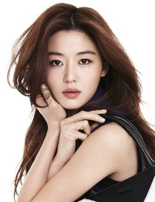

Jun Ji Hyun

Profile
| Name: |
Gianna Jun |
| Hangul: |
왕지현 |
| Born: |
October 30, 1981 |
| Height: |
172cm |
Filmography
| Year |
Film |
| 2004 |
Windstruck |
| 2006 |
Daisy |
| 2008 |
A Man Who Was Superman |
Jun Ji Hyun was born on 30 October in 1981. She is also known
by her English name, Gianna Jun. She is a South Korean actress.
She rose to fame for her roles as she stared in the romantic comedy which is called
My Sassy Girl in 2001. This sshow is one of the highest-grossing Korean comdedies
of all time. She also stared in other films including, Windstruck in 2004,
The Thieves in 2012, The Berlin File in 2013 and Assassnination in 2015.
She also stared in television series, My Love from the Star, which was aired in 2013-2014 and
Legend of the Blue Sea in 2016-2017. Due to the success of her films and television
dramas internationally established her as a top Hallyu star.
Before her career, her mother and her mother's friends all encouraged her to be model
or actress due to her tall and slim body shape. Her childhood dream was to become a flight
attendant,
but later gave up on that. When she was 16, her high school friend who was a model
introduced her to a photographer.